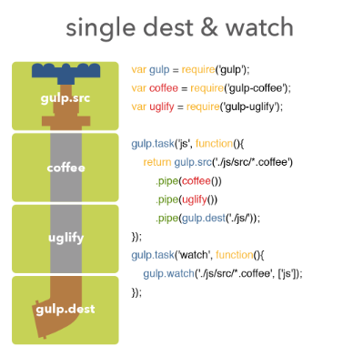

Đến hẹn lại lên, hôm nay mình sẽ giới thiệu đến bạn 1 công cụ vô cùng bá đạo ở đế chế Node.js giúp bạn tự động hóa 1 số thao tác khi lập trình và phát triển ứng dụng Web. Đó chính là Gulp. Gulp à! Em là ai? Em đến trái đất với mục đích gì? Hãy cùng mình tìm hiểu về nó nhé!
Gulp là gì?

Theo như bác Gồ: Gulp là một package của Node.js, nó là 1 trình quản lý các task. Kết hợp với 1 số plugin, Gulp giúp các developer (chủ yếu là các Web developer) tự động quá 1 số thao tác như compile SASS/LESS, minify CSS, Javascript, tự động compile khi các file được thay đổi, dọn dẹp file rác, unit testing, etc.
Trước mình có làm dùng 1 thằng tương tự đó là Grunt nhưng do việc cấu hình loằng ngoằng quá nên mình chuyển sang dùng Gulp (cứ cái nào nhanh gọn, dễ là mình dùng).
Cách cài đặt
Do Gulp chạy trên nền Node.js nên tất nhiên bạn phải cài Node.js rồi đúng không nào! Cách cài Node.js các bạn có thể tìm kiếm có khắp luôn :D
Sau khi đã có **node **và npm ta sẽ cài tiếp đến gulp ở global để có thể gõ lệnh
|
|
và gulp ở project mình đang chạy để require vào file Gulpfile.js ở phía dưới.
|
|
Cơ chế hoạt động
Gulp hoạt động theo cơ chế pipe line (kiểu đường ống).

Nhìn hình bạn có thể hiểu: Đầu tiên sẽ của đầu vào gọi là source tương ứng với gul.src, sau đó qua các bộ xử lý (ví dụ như coffee(), uglify() như trong hình), cuối cùng ta được đầu ra gọi là destination tương ứng với gul.dest. Ngoài ra thì nó còn có thể tạo ra đường ống nhưng với nhiều đầu ra bằng các tạo ra nhiều gul.dest.
Vậy là đủ đề hiểu cơ bản về cơ chế hoạt động của Gulp rồi. Tiếp đến mình sẽ hướng dẫn các bạn cách dùng nhé.
Hướng dẫn cấu hình với Gulpfile.js
Để sử dụng Gulp cho project, bạn cần tạo ra 1 file Gulpfile.js ở trong thư mục gốc của project đó.
Code cơ bản với gulp sẽ có kiểu như này:
|
|
Sau đó ta chạy lệnh:
|
|
Để chạy task theo ý muốn hoặc chỉ cần gọi lệnh gulp để chạy task mặc định default. Chúng ta cũng có thể chạy nhiều task cùng lúc bằng cách gõ thêm tên các task phía sau:
|
|
Sử dụng để dịch SASS
Để dịch SASS ta sử dụng thêm 1 package nữa là gulp-sass và cài đặt như sau:
|
|
Sau đó ta sẽ tạo thêm 1 task nữa ở Gulpfile.js như sau:
|
|
Sau đó chạy lệnh gulp sass để biên dịch từ file scss sang file css.
Ở đây có 1 điều chúng ta cần quan tâm nữa đó là gulp.src(), trong đó sẽ lọc các file làm đầu vào với các quy tắc lọc như sau:
- css/app.css tìm chính xác file
- sass/.scss* tìm kiếm tất các file kết thúc bằng .scss và nằm trong thư mục sass
- sass//.scss* tìm kiếm tất cả các file kết thúc bằng .scss ở trong thư mục sass/ và tất cả thư mục con của nó
- !sass/app.scss tìm kiếm tất cả các file trong thư mục ngoại trừ file app.scss
- *.+(scss|css) tìm kiếm tất cả các file trong thư mục root có đuôi là .scss và .css
Watch & Livereload CSS
Ừm, vẫn chưa thấy tự động lắm nhỉ? Mỗi lần sửa file scss lại phải gõ lệnh để compile scss lại. Chúng ta cần 1 giải pháp để phát phiện các file scss thay đổi và tự động compile đúng không nào?
Đơn giản lắm! Ở đây mình sẽ sử dụng thêm package gulp-livereload giúp kết nối với trình duyệt để reload lại file css khi Gulp báo file scss được compile thành công. Mình nói có vẻ chưa hấp dẫn nhưng đến khi bạn sử dụng nó thì thôi rồi, bạn không bao giờ muốn từ bỏ nó đâu.
Tạo file Gulpfile.js với nội dung sau:
|
|
Bạn có thể thấy, ở task watch mình sẽ lắng nghe sự thay đổi của các file scss nếu có sự thay đổi mình sẽ gọi tới task sass. Ở task sass, cuối đường ống mình chạy livereload() để thông báo với trình duyệt là đã compile xong scss.
Chạy lệnh:
|
|
À tí quên! Để kết nối với trình duyệt ta cần sử dụng thêm một extension nữa các bạn tự tải ở đây tùy vào trình duyệt bạn đang dùng (thằng Firefox thì không có bản Live nên phải config hơi phức tạp tí) . Nó sẽ tự động đọc lại file css đã được biên dịch, nó giúp chúng ta tiết kiệm thời gian và giúp phím F5 của bạn không bị hỏng, các Dev front-end thích điều này :))
BTW
Tiện đây mình cũng kể thêm 1 số package khác mình hay dùng với Gulp để xử lý các thao tác hiệu quả hơn, có thể đây không phải là các plugins hay nhất, tốt nhất nên bạn nào biết plugin nào hay hơn thì đưa lên cho mọi người tham khảo nữa nhé :D
- gulp-rename: Để viết lại tên của file source.
- gulp-cssnano: Để minify css.
- gulp-concat: Để nối nội dung các file.
- gulp-less: Để biên dịch less sang css.
- gulp-uglify: Minify javascript với UglifyJS2.
Ngoài ra còn có rất nhiều plugins của Gulp với nhất nhiều tính năng rất hay, các bạn có thể khám phá tại trang Plugins của Gulp.
Đây là 1 ví dụ khá hoàn chỉnh 1 file Gulpfile.js mình hay dùng:
|
|
Sau đó chạy lệnh gulp là xong! Mọi việc cứ để Gulp lo :D
Kết luận
Bạn thấy đó, Gulp thật tuyệt vời phải không nào! Nhờ có nó mà chúng ta tiết kiệm được rất nhiều thời gian xử lý 1 số thao tác bằng tay và chuyển qua tự động hóa.
Ở bài này mình chỉ giới thiệu cơ bản về Gulp và 1 ví dụ đơn giản thường dùng là biên dịch SASS một cách tự động hay LESS cũng tương tự vậy. Ngoài ra, khi bạn sử dụng thực tế bạn sẽ thấy rất nhiều ứng dụng ở Gulp, hãy chia sẻ với mình và mọi người nếu bạn tìm thấy gì đó hay ho nhé :D